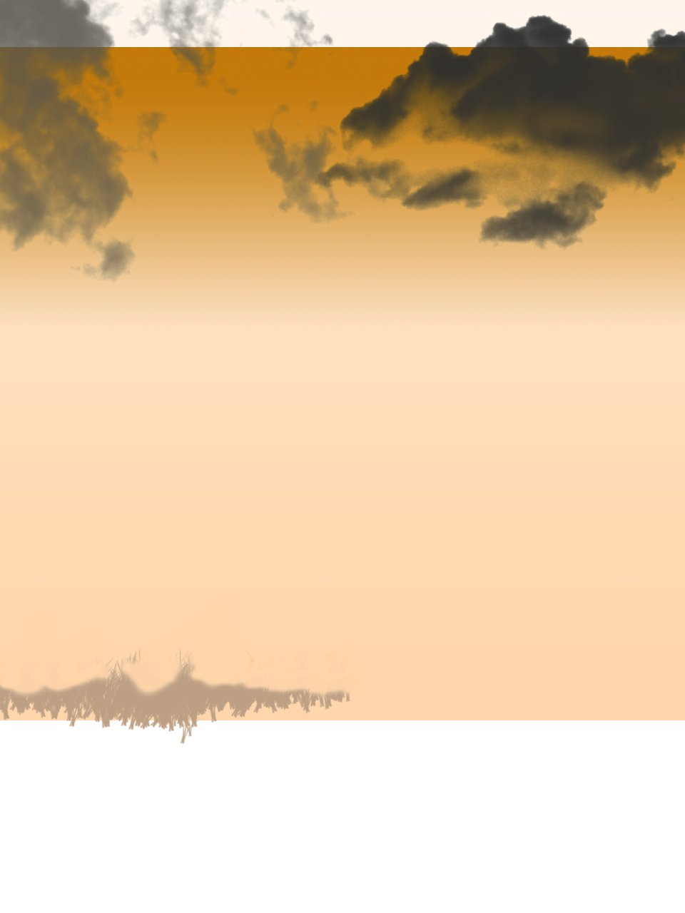
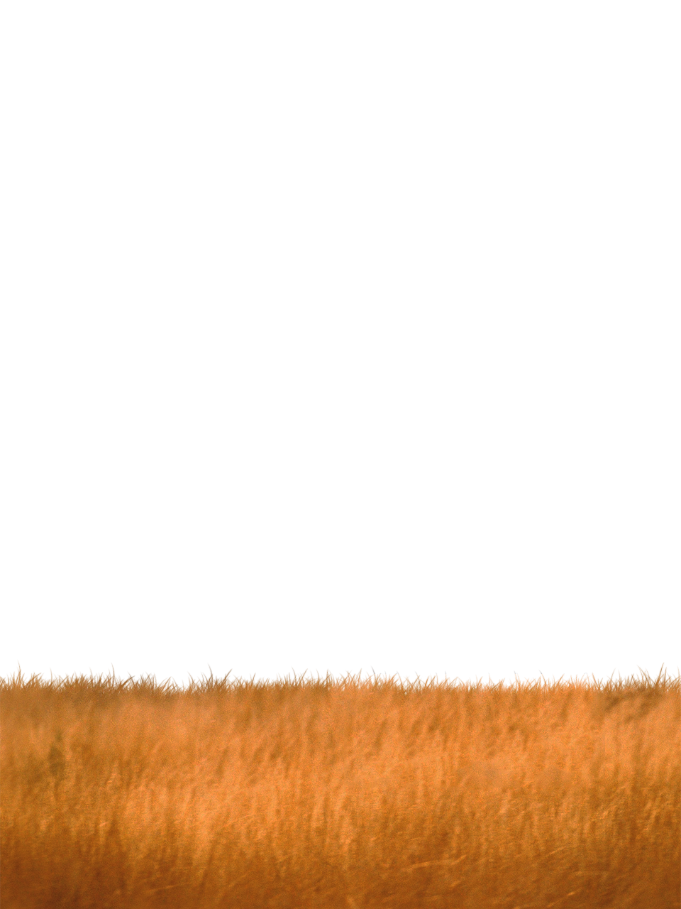
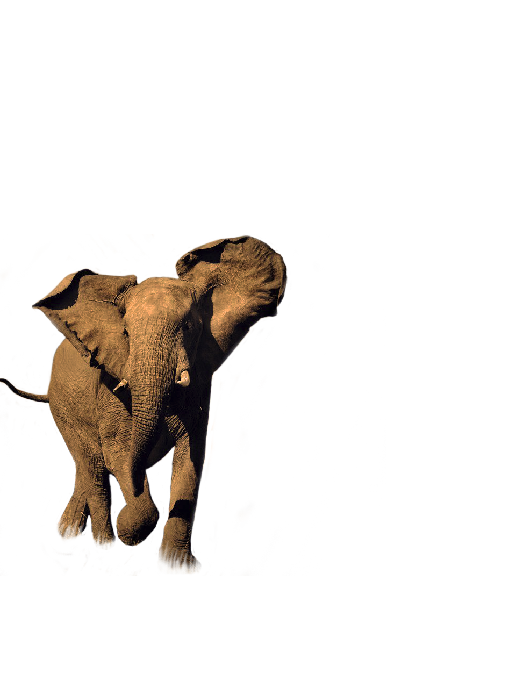

Inicio
¿Quienes
Somos?
¿Que Hacer
por el Planeta?
Historias
y Noticias
Nuestra
Tierra


Especies en Peligro Crítico
Una vez común en toda África y Asia, el número de elefantes se agotaron gravemente el siglo 19, en gran parte debido al masivo comercio de marfil. Mientras que algunas poblaciones están ahora estables, la caza furtiva y la destrucción del hábitat continúan amenazando la especie.
El animal terrestre más grande
Las amenazas a los elefantes
Tanto los elefantes africanos y los elefantes asiáticos necesitan una gran cantidad de alimentos y de la libertad para sobrevivir. Vagan en pequeñas y grandes manadas de más áreas a veces muy grandes, mientras que el consumo de hasta varios cientos de kilogramos de materia vegetal en un solo día. Elefantes, de hecho, el lugar tan grandes demandas en su propio ambiente que con frecuencia entran en conflicto con las personas que compiten por muchas de las mismas, a menudo escasos, recursos.
La caza furtiva sigue siendo un problema. Aunque la caza furtiva de elefantes por su marfil ha disminuido desde la prohibición de marfil en todo el mundo 1989, sigue siendo un problema generalizado. Las grandes cantidades de marfil africano, por ejemplo, todavía están encontrando su camino hacia los mercados ilegales de África y más allá. Los elefantes también son asesinados por su carne y pieles. pérdida de hábitat también una preocupación A más amenaza a largo plazo es la reducción del hábitat disponible para los elefantes en la cara de la expansión de las poblaciones humanas. La pérdida de hábitat aislados de muchas poblaciones de elefantes salvajes, con antiguas rutas migratorias cortadas por los asentamientos humanos. pérdida y degradación del hábitat también aumenta enfrentamientos entre los elefantes y la gente, a menudo conduce a muertes en ambos lados.
¿Quienes Somos?
Historia
Contactos
¿Qué Hacer por el Planeta?
Vida Verde
Voluntariado
Donar a WWF
Historias y Noticias
Historias
Noticias
Videos
Nuestra Tierra
Especies en Peligro Crítico
Clima
Bosques